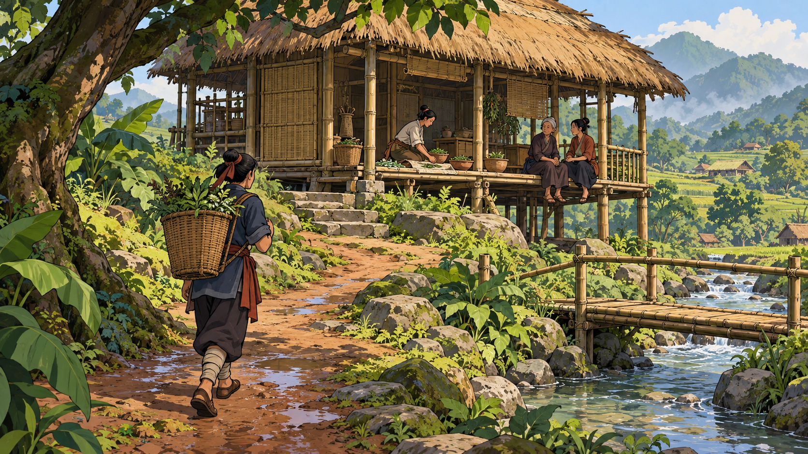

01 / A
Nét vẽ và mảng bóng
Đường viền và các mảng sáng tối thử làm rõ cử chỉ, nhân vật và đường đi trong một thế giới vẽ tay.
Muốn xem: cách giản lược có giữ được vẻ trưởng thành và chiều sâu đời sống?
THÊM PHIÊN BẢN ĐỂ THAM KHẢO
Một sân nhà bên suối sau cơn mưa: người mang giỏ thảo mộc vừa tới, người trên hiên và gia đình đang chờ. Lần này thử nét hoạt hình, thế giới dệt và hình khối cách điệu.
Ảnh mô phỏng · Chưa phải game chạy · Chờ bạn chốt

Một cuộc gặp sau cơn mưa.
Hướng hoạt hình 2D thử đường viền rõ và mảng sáng tối gọn để diễn tả người, sân nhà và lối đi.
Ba ảnh tạo riêng theo cùng tình huống; không phải các camera của một scene hoặc geometry khớp tuyệt đối.
Chưa tải được ảnh. Kiểm tra thư mục assets của bản thử nghiệm 08.
Đang xem phương án A.
Đổi ảnh bằng nút A / B / C hoặc phím 1 / 2 / 3. Chỉ giao diện xem ảnh có tương tác.
MỘT TÌNH HUỐNG / BA NGÔN NGỮ ĐỒ HỌA
Giữ chung ý tưởng sân nhà, dòng suối, cây cầu và cuộc gặp để xem cách tạo hình thay đổi cảm giác thế giới ra sao.
Bố cục và nhân vật vẫn có thể khác giữa các ảnh tạo riêng. Đây là cách xem trước thuận tiện hơn, chưa phải phép so sánh kiểm soát hoàn toàn.
01 / A
Đường viền và các mảng sáng tối thử làm rõ cử chỉ, nhân vật và đường đi trong một thế giới vẽ tay.
Muốn xem: cách giản lược có giữ được vẻ trưởng thành và chiều sâu đời sống?
02 / B
Sợi và nhịp đan thử tạo nên cả cây, nước, nhà và con người, như một thế giới được dệt thành.
Muốn xem: chất liệu có tạo bản sắc mà vẫn phân biệt được người và việc đang diễn ra?
03 / C
Mảng khối, bề mặt và ánh sáng thử tạo chiều sâu mà không cần đi theo hướng tả thực.
Muốn xem: khối có giúp đọc không gian mà vẫn giữ được cảm giác con người?
Mở phiên bản mới không có nghĩa bản trước bị loại hoặc bị đánh giá kém. Các hướng có thể được tham khảo, kết hợp hoặc quay lại khi cần; chưa tự xếp hạng hoặc chốt thay bạn.